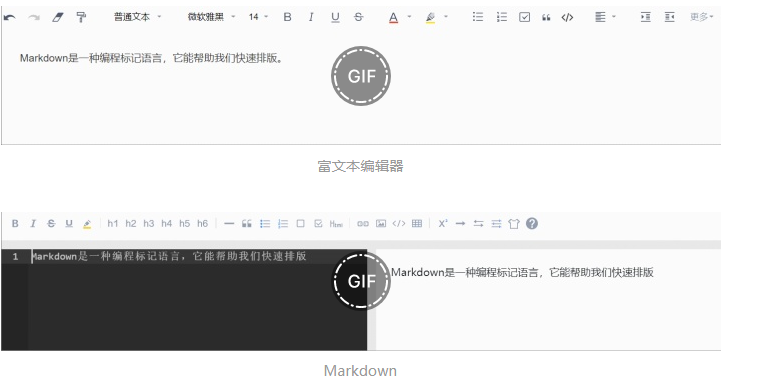

Markdown快速入门教程
了解Markdown
人们在网上发布的文章大多都是通过 富文本编辑器 将所写内容+排版转换为Html格式，所显示出来。
而如今有了Markdown，人们能够更加方便地对文章进行排版修饰。
∴ Markdown 是一种常见的 标记语言 (非编程语言)，它能帮助我们 快速排版文档。
如今我们能在 有道云笔记、Github 等各类 软件/网站 中看见Markdown的身影。

Markdown常用用法
标题
Markdown中有六种标题，用#表示，字体大小逐渐递减
# 一级标题
## 二级标题
### 三级标题
#### 四级标题
##### 五级标题
###### 六级标题

换行
Markdown有两种换行方式：
- </br> 使用html中的换行标签
- 两个回车
方法1：
</br>
使用html中的“换行标签”换行
方法2：
两个回车

分割线
Markdown有两种换行方式：
- 用 ***（3个*号）表示
- <hr/> 使用html中的换行标签
看
***
分割线
<hr/>

引用
Markdown中引用直接使用 >（大于号）即可
> 引用话语

转义
当我们在符号前加上 \ 它就会转义，不会产生应有效果
\> 不是引用
</br>
\# 不是标题


常见字体效果
在Markdown中有4种常见字体效果：斜体、加粗、高亮、划线
*斜体*
**加粗**
==高亮==
~~划线~~

待办事项
- [ ] 未完成事项
- [x] 已完成事项

超链接 & 图片
Markdown中 超链接 和 显示网页图片 其实差不多，就一个 ! 的区别
格式：
[显示文字](链接)

示例：
[百度](http://www.baidu.com/)


代码高亮
格式：
```key
code
```
示例：
```java
public class JavaApplication32 {
public static void main(String[] args) {
System.out.println("Hello World!")
}
}
```

编程语言 & key 对应表（常用语言）

表格
格式:
标题1|标题2|标题3
-----|-----|----
内容1|内容2|内容3
内容4|内容4|内容4

列表
在Markdown中有两种列表：无序列表（无数字）、有序列表（有数字）
无序列表：
- 列表1
- 列表1.1
- 列表1.2

有序列表：
1. 内容1
- 内容1.1
2. 内容2
3. 内容3

软件推荐
在文章的最后，推荐一款Markdown软件：Typora
Typora界面简洁、主题精美、支持多平台。
大家可以去尝试一下。

补充内容 - 给Typora更换主题
接下来的内容是补充内容，会将如何给Typora更换主题，大家可以根据自己的需求选择是否阅读。